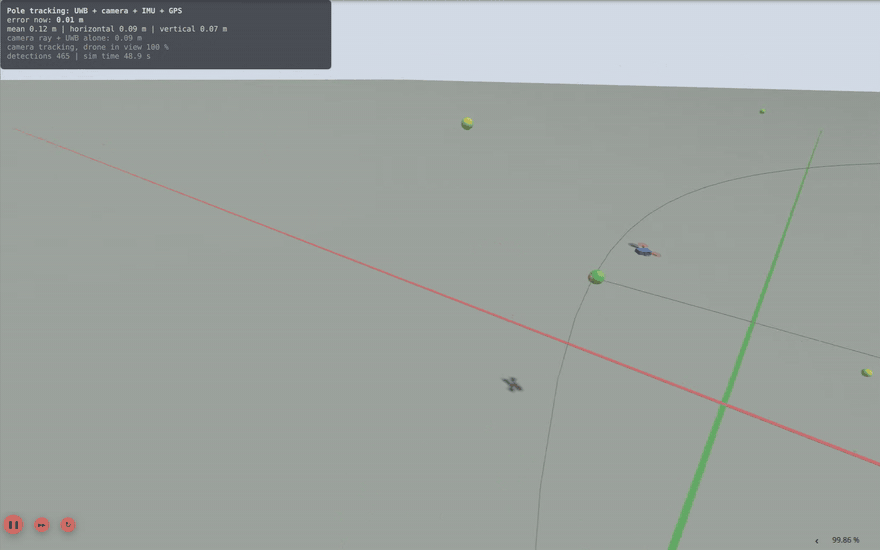
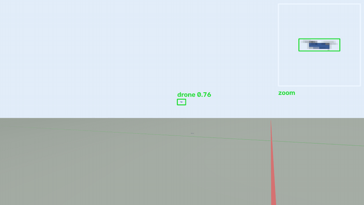

Getting started
From a fresh clone to a pole tracking a flying drone: Gazebo, YOLO training and the fusion.
This guide takes you from a fresh clone to a pole that tracks a flying drone in Gazebo. Along the way you set up YOLO, generate a training set from the simulation, train the detector, and run the full camera + UWB fusion.

1. clone with the shared library
git clone --recurse-submodules <url>/drone_localization
cd drone_localizationIf external/gnss-imu-fusion/ is empty:
git submodule update --init
# local sibling clones only:
git -c protocol.file.allow=always submodule update --init2. build and test the filter
The estimator is header-only and needs no Gazebo, so this works on any machine with CMake ≥ 3.22 and a C++20 compiler:
cmake -S . -B build
cmake --build build -j
ctest --test-dir build --output-on-failure3. get Gazebo Harmonic
On Ubuntu 24.04 install gz-harmonic from packages.osrfoundation.org. On Fedora, use a distrobox. Every command below assumes you are inside it.
distrobox create --name gazebo --image ubuntu:24.04
distrobox enter gazebo
# inside: gazebosim.org's harmonic install for ubuntu, then
sudo apt install cmake g++ libboost-dev qtbase5-dev qtdeclarative5-dev python3-opencv4. set up and train the detector (once)
- Install YOLO into
build-sim/yolo-venv. The venv also sees the system Gazebo Python bindings. If the host has an NVIDIA driver,env.shmakes it reachable from the container.sim/detector/setup.sh - Generate data and train.
train.shflies several simulated flights in parallel (separateGZ_PARTITIONs, different radii and heights), saves pole camera frames labelled from the true drone pose, then trains and writesbuild-sim/drone.pt. Nothing is labelled by hand.sim/detector/train.sh # optional argument: epochs
train.sh again.5. run the tracking
sim/run_pole.sh # gazebo window + yolo panel
sim/run_pole.sh --headless --duration 120 # terminal only (still needs a display)
sim/run_pole.sh --no-gps --no-imu # camera and uwb onlyrun_pole.sh builds into build-sim/, starts Gazebo with the shared layout plus a “YOLO detections” panel, starts sim/detector/detect.py, and runs the bridge. Every simulated second it prints the fused error and the detection counts. Ctrl-C prints the summary.

things to try
| command | what you learn |
|---|---|
--no-gps --no-imu | what the pole alone can do: pure range + bearing |
--fixed-camera | why the pan-tilt matters: the drone leaves a fixed field of view |
--slew-rate 30 | a slow mount lags behind fast passes |
--uwb-noise 0.5 | the range error shows up along the camera ray |
--latency 0.1 | too small a fusion delay: late detections get dropped |
--csv out.csv | estimate and ground truth per step, for your own plots |
DETECTOR_IMGSZ=640 sim/run_pole.sh | a faster but less precise detector |
troubleshooting
| symptom | cause |
|---|---|
no detector weights | run step 4 first |
| detections stay at zero | see build-sim/detector.log. Usually the venv is missing or the camera has no display. |
| many “late” detections | YOLO is slower than --latency. Use a GPU, a smaller DETECTOR_IMGSZ, or a larger latency. |
| no overlay text | gz-gui8 or Qt5 dev packages were missing when build-sim was configured |
| Gazebo problems | build-sim/gz.log |